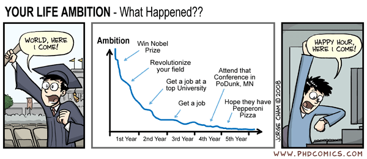

Hello world!
It's done -- the blog setup is complete! I've been meaning to get on this for a while now.
Creative procrastination seems to be all the rage nowadays, so I figured that the summer before I officially
become a quasi-unemployed member of society is as good of a time as ever to start.
Just kidding. I'm actually really excited for grad school. There's something both crazy
and adrenaline-rush exciting about the thought of spending the next 5
(6? 7? before I die?) years doing research. Think about it. When will be the next time
that you can define "productivity" as "hitting up all the hottest new
releases on the arXiv?" Or traveling to conferences and sharing ideas
with some of the brightest and most motivated people in your field? Sounds pretty cool
if you ask me.
But in reality, it seems
like this whole
PhD process is a
marathon
where the ups and downs are entirely different beasts on their own. I think this
xkcd comic sums it up rather nicely:

To be honest I get a bit nervous if I think about it for too long. So this blog is meant to
be a space where I can un-focus from the seriousness of it all and document the
enjoyable steps I take along the way: small tidbits of life, fun
slices of projects, or attempted explanations of topics that I find interesting (I include
the last bit to hold myself accountable. I think academic blogs are super cool but I
haven't found the motivation to write anything yet).
Here's to a month left of summer and many more posts to come!